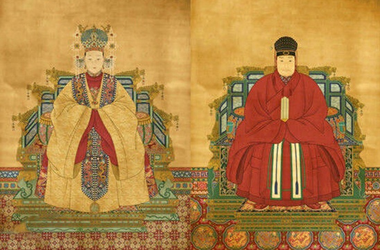

History of Costume
FEATURE OF EAST & WEST
周
The establishment of the Western Zhou Dynasty (c.1100-c.771BC) highly improved the social productivity. The special restrictions and rank symbols of dress and personal adornment began to be clear at that time, and types and varieties of garments increased correspondingly. This design used a belt hook to girdle the waist, and wearers used exquisite hooks or buckles made of gold, silver, copper or iron at the joint of ribbons.
 Tomato
Tomato
春秋戰國
Clothing in ancient Greece primarily consisted of the chiton, peplos, himation, and chlamys. Ancient Greek men and women typically wore two pieces of clothing draped about the body: an undergarment (chiton or peplos) and a cloak (himation or chlamys).Ancient Greek clothing was mainly based on necessity, function, materials, and protection rather than identity.
魏晉
As stipulated, the court robes must be red, and casual garments must be purple in the Wei and Jin period. White was the garment color of common people. The adornments of women were more exquisite, including Jinhuan (golden loop), Yinyaozhi (silver fingering) and Tiaotuo (bracelet around the wrists), etc.
 Tomato
Cheese
Tomato
Cheese
唐
Women's dress and personal adornments of the Tang Dynasty were outstanding in China's history. The clothing materials were exquisite, the structure was natural, graceful and elegant, and adornments were splendid. In this way, a special open and romantic style of dress and personal adornments was formed.
宋
Costume the Song Dynasty (960-1279) was simple and natural, reflecting the development tendency of the era. Formal robes had an oblique collar, big sleeves, and a leather waistband. Colors were used to distinguish the ranks of civil officials.Most granted costumes were decorated with bird and beast patterns woven with brocades.
 Tomato Cheese
明
There were many new changes in costume of the Ming Dynasty (1368-1644). The outstanding feature was that the buttons on the forepart replaced the band knots in use for several thousand years. In addition, the popularization of Confucian school of idealist philosophy also affected the dressing style to a certain degree.
In the Qin Dynasty black was used as a superior color to symbolize the power of water, thus clothing and adornments of noble people were all of dark color or simply black while common people could only wear cloth made of linen, colored with white, buff or pale yellow During the early Baroque, women wore long gowns with a low neckline, lace collars for decoration, and virago sleeves. Elaborate patterns and dark colors were popular. Men’s clothing had a militaristic look with outfits consisting of a doublet worn over an undershirt, loose breeches, and boots up to the knee. In the Qin Dynasty black was used as a superior color to symbolize the power of water, thus clothing and adornments of noble people were all of dark color or simply black expect emperor wearing yellow.During the early Baroque, women wore long gowns with a low neckline, lace collars for decoration, and virago sleeves. Elaborate patterns and dark colors were popular.
民國
The cheongsam (from Cantonese Chinese: 長衫), also known as qipao (from Mandarin Chinese: 旗袍), is a type of feminine body-hugging dress with distinctive Chinese features of Manchu origin. It was called mandarin gown during 1920s-1930s, popularised by Chinese socialites and upper-class women in Shanghai.